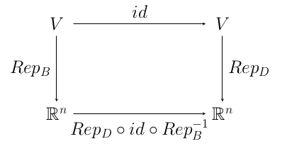

15 Change of Basis
We have seen how to use matrices to represent homomorphisms. Those representations depend on choice of basis for each of the vector spaces involved. The question is, what happens when we change to a different basis? Chapter Three, Section V of the textbook deals with this question.
First, we look at the effect of change of basis on vectors. Suppose that $V$ is a vector space of dimension $n$, and we have two different bases for $V$, $B=\langle\vec\beta_1,\vec\beta_2,\dots,\vec\beta_n\rangle$ and $D=\langle\vec\delta_1,\vec\delta_2,\dots,\vec\delta_n\rangle$. We can then represent a vector $\vec v\in V$ as a column vector in $\R^n$ in two different ways, as ${\rm Rep}_B(\vec v)$ or as ${\rm Rep}_D(\vec v)$. Given one of these representations, how can we get the other one? This is what it means to ask what happens to the representation when we change our choice of basis.
Remember that ${\rm Rep}_B$ is an isomorphism ${\rm Rep}_B\colon V\to \R^n$, and so is ${\rm Rep}_D\colon V\to \R^n$. And in each case we have the inverse isomorphism ${\rm Rep}_B^{-1}$ or ${\rm Rep}_D^{-1}$. We can transform ${\rm Rep}_B(\vec v)$, the representation of $\vec v$ in the basis $B$, to ${\rm Rep}_D(\vec v)$, the representation of $\vec v$ in the basis $D$, by applying the isomorphism ${\rm Rep}_D\circ{\rm Rep}_B^{-1}$ to it: $${\rm Rep}_D(\vec v) = {\rm Rep}_D\circ{\rm Rep}_B^{-1}({\rm Rep}_B(\vec v))$$ The homomorphism ${\rm Rep}_D\circ{\rm Rep}_B^{-1}$ maps $\R^n$ to $\R^n$, and it has an $n\times n$ representation matrix, $Q$. That is, for $\vec x\in \R^n$, multiplication of $\vec x$ on the left by $Q$ is the same as applying the isomorphism ${\rm Rep}_D\circ{\rm Rep}_B^{-1}$ to $\vec x$. This matrix $Q$ is the change of basis matrix representing the change of basis for $V$ from $B$ to $D$. To be more clear, suppose that $${\rm Rep}_B(\vec v) = \begin{pmatrix}x_1\\x_2\\\vdots\\x_n\end{pmatrix} \mbox{ and } {\rm Rep}_D(\vec v) = \begin{pmatrix}y_1\\y_2\\\vdots\\y_n\end{pmatrix}$$ Then, $$ Q\cdot \begin{pmatrix}x_1\\x_2\\\vdots\\x_n\end{pmatrix} = \begin{pmatrix}y_1\\y_2\\\vdots\\y_n\end{pmatrix}$$ Knowing $Q$, we can translate a vector from one representation to the other. Note, by the way that the inverse matrix $Q^{-1}$ is the change of basis matrix representing the change of basis in the other direction, from $D$ to $B$.
We still need a way to find $Q$, given $B$ and $D$. This can be related back to representations of general homomorphisms by writing ${\rm Rep}_D\circ{\rm Rep}_B^{-1}={\rm Rep}_D\circ id\circ{\rm Rep}_B^{-1}$ where $id\colon V\to V$ is the identity map $id(\vec v) = \vec v$. We then have the commutative diagram

We see that $Q$, the matrix that represents ${\rm Rep}_D\circ{\rm Rep}_B^{-1}$, is what we defined as ${\rm Rep}_{B,D}(id)$. To find $Q$, we only need to write out $id(\vec\beta_i)$ in terms of the basis $D$ for each $\vec\beta_i$ in $B$. Since $id(\vec\beta_i)=\vec\beta_i$, this means we should write $\vec\beta_i$ as a linear combination of $\delta$'s, and use the coefficients from that linear combination as the $i^{\rm th}$ column of $Q$. If $$\begin{align*} \vec\beta_1 &= c_{11}\vec\delta_1 + c_{21}\vec\delta_2+ \cdots + c_{n1}\vec\delta_n\\ \vec\beta_2 &= c_{21}\vec\delta_1 + c_{22}\vec\delta_2+ \cdots + c_{n2}\vec\delta_n\\ &\vdots\\ \vec\beta_n &= c_{1n}\vec\delta_1 + c_{2n}\vec\delta_2+ \cdots + c_{nn}\vec\delta_n \end{align*}$$ then $$ Q=\begin{pmatrix} c_{11} & c_{12} & \cdots & c_{1n}\\ c_{21} & c_{22} & \cdots & c_{2n}\\ \vdots& \vdots& \ddots & \vdots\\ c_{n1} & c_{n2} & \cdots & c_{nn} \end{pmatrix}$$
Now, suppose that we have a homomorphism $h\colon V\to W$. If $B$ is a basis for $V$ and $D$ is a basis for $W$, then we get the representation matrix ${\rm Rep}_{B,D}(h)$. This representation depends both on the choice of basis for $V$ and on the choice of basis for $W$. How does the representation of the homomorphism change if we choose different bases for $V$ and for $W$? That is, how can we get ${\rm Rep}_{B',D'}(h)$ from ${\rm Rep}_{B,D}(h)$?
Suppose that we have alternative bases $B'$ and $D'$ of $V$ and $W$. Let $Q={\rm Rep}_{B,B'}(id)$, the change of basis matrix representing the change of basis for $V$ from $B$ to $B'$. This matrix can be calculated from $B$ and $B'$ as above. Similarly, let $P={\rm Rep}_{D,D'}(id)$, the change of basis matrix representing the change of basis for $W$ from $D$ to $D'$. Then $${\rm Rep}_{B',D'}(h) = P\cdot {\rm Rep}_{B,D}(h) \cdot Q^{-1}$$ This is simply writing the matrix ${\rm Rep}_{B',D'}(h)$ as a product of three other matrices.
Remember that $Q^{-1}$ is the change of basis matrix from $B'$ to $B$. If we start with a vector $\vec x\in \R^n$ that represents some $\vec v\in V$ in the basis $B'$, then $Q^{-1}\vec x$ is the element of $\R^n$ that represents $\vec v$ in the basis $B$. By definition of ${\rm Rep}_{B,D}(h)$, when we multiply that vector by the matrix ${\rm Rep}_{B,D}(h)$, we get the representation of $h(\vec v)$ in the basis $D$. Finally, multiplying the result by $P$ gives the representation of $h(\vec v)$ in the basis $D'$. The final result, going from the representation of $\vec v$ in the basis $B'$ to the representation of $h(\vec v)$ in the basis $D'$ is exactly what the matrix ${\rm Rep}_{B',D'}(h)$ accomplishes.